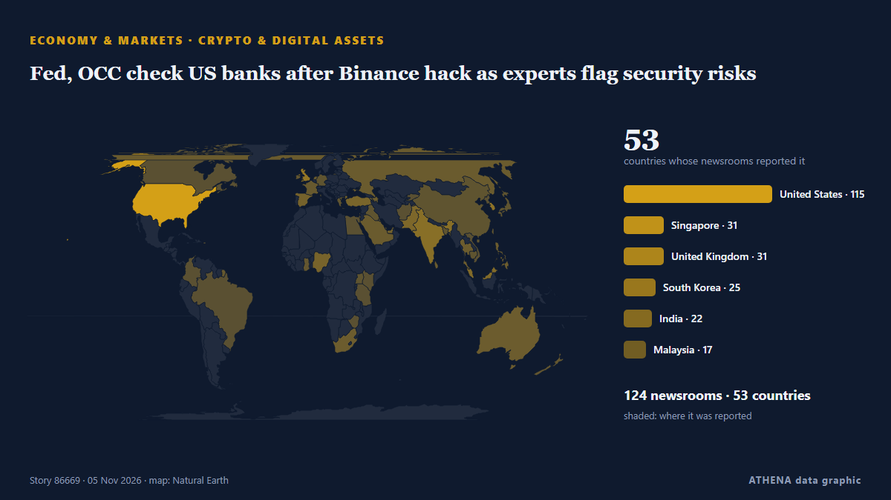

Fed, OCC check US banks after Binance hack as experts flag security risks

An on-chain tally puts the suspected Binance drain at $5.57 billion across three blockchains, as Tether and Circle froze $1.8 billion. из Decrypt
Независимые источники: 124 издания в 53 странах, с 29 окт.; первым сообщил MINING.COM; освещение продолжает расти. ATHENA оценивает риск как умеренный (3.8/10), прежде всего из-за тяжести описываемого ущерба и географического и отраслевого охвата. Уверенность — 82 % (высокая); подтверждают независимые источники: 124 издания, средняя надёжность источников — 73 %. СМИ по странам: Соединенные Штаты (17), Малайзия (4), Сингапур (4). Освещение: с 29 окт. по 30 окт., 24 ч.
Почему это важно: Центробанки задают цену денег; их решения двигают валюты, облигации, ипотеку и биржи по всему миру.
Что изменилось: 13 новых сообщений от 9 редакций за 24 часа до 5 нояб..
Первый заголовок: Thailand targets US$1bil in assets as alleged scam suspects flee
Заголовки приводятся на английском языке, как они были опубликованы.
Коротко в цифрах
Отобрано, оценено и написано по опубликованной методологии ATHENA. Ни один редактор не вмешивается в отдельные события. Как это создаётся ›
| 29 Oct 18:55 UTC | 13 |
|---|---|
| 30 Oct 06:55 UTC | 28 |
| 30 Oct 18:55 UTC | 10 |
| 31 Oct 06:55 UTC | 8 |
| 31 Oct 18:55 UTC | 37 |
| 01 Nov 06:55 UTC | 57 |
| 01 Nov 18:55 UTC | 32 |
| 02 Nov 06:55 UTC | 54 |
| 02 Nov 18:55 UTC | 61 |
| 03 Nov 06:55 UTC | 53 |
| 03 Nov 18:55 UTC | 29 |
| 04 Nov 06:55 UTC | 13 |
| 04 Nov 18:55 UTC | 4 |
| 05 Nov 06:55 UTC | 8 |
| 05 Nov 18:55 UTC | 1 |
| 01 Nov 01:40 UTC | 3.1 |
|---|---|
| 03 Nov 06:56 UTC | 4.2 |
| 05 Nov 19:15 UTC | 3.8 |
Откуда эти цифры
Значимость
Риск
Уверенность
Освещение — кто сообщил и когда
заголовок в оригинале · открывает источник- MINING.COM · КанадаMorton Salt ceases operations at Ohio mine after water breach
- Decrypt · Соединенные ШтатыBinance Drained of $5.5 Billion in Suspected Hack, Tether and Circle Freeze $1.8 Billion
- Decrypt · Соединенные ШтатыBinance Hacker Hunts for Exit Ramps as DeFi Exchanges Pause Markets
- New Straits Times · Малайзия[UPDATED] Crypto platform Binance confirms major hack, more than US$2.5bil frozen
- Free Malaysia Today · МалайзияCrypto platform Binance confirms major hack, more than US$2.5bil frozen
- New Straits Times · МалайзияBitcoin, cryptocurrency prices fall after Binance reports security issue
- CNA (Channel NewsAsia) · СингапурCrypto exchange Binance freezes assets after US$6.3 billion security breach
- The Business Times · СингапурBinance halts withdrawals as suspected hack spurs crypto sell-off, vows to ‘cover all losses’
- APA (English) · Азербайджан“Bitcoin”in qiyməti 78 min dollara kimi enib
- Insurance Journal · Соединенные ШтатыRecord Binance Hack Shows No Crypto Firm Is Too Big to Breach
- The Thaiger · ТаиландBinance TH pauses crypto transfers, says Thai funds safe after hack
- Cointelegraph · Соединенные ШтатыStrategy eyes more Bitcoin buys as Saylor touts $30B credit capacity
- Free Malaysia Today · МалайзияAnalysts react as Binance freezes assets after US$6.3bil security breach
- eNCA · Южно-Африканская РеспубликаCrypto platform Binance confirms major hack, more than $2.5bn frozen
- Insurance Journal · Соединенные ШтатыBinance Estimates $6.3 Billion Hacked in Crypto’s Biggest Heist
- Rappler · ФилиппиныIs Vista Mall Santa Rosa next to go as the Villars’ debt clock ticks?
- Decrypt · Соединенные ШтатыBinance Finds 'Additional Points of Breach' in $6.3B Hack
- Khaosod English · ТаиландBinance TH says customer assets safe, suspends deposits and withdrawals after nearly US$6.3 billion hack
- Indian Express · ИндияBinance security breach: How ‘biggest-ever’ hack happened, its impact on Indian crypto market
- 24.kg (English) · КиргизияNAVA urges Kyrgyzstanis to strengthen wallet security after Binance attack
- Dawn · ПакистанCrypto exchange Binance freezes assets after $6.3bn 'complex' security breach
- CNA (Channel NewsAsia) · СингапурFBI and US Secret Service working with Binance after $6.3 billion hack, source says
- NL Times · НидерландыMassive $6 billion Binance crypto hack likely has small impact in the Netherlands
- Decrypt · Соединенные ШтатыTRM and Chainalysis Tie $6.4B Binance Hack to North Korea's TraderTraitor
- Decrypt · Соединенные ШтатыMorning Minute: Binance’s $6.4B Hack Overshadows Hyperliquid’s Biggest Day
- The Business Times · СингапурBitcoin drops below US$77,000 as Binance hack shakes crypto
- CNBC World · Соединенные Штаты'Bad time to troll': Binance co-founder Zhao asks Musk for support after hack
- Decrypt · Соединенные ШтатыWhat is EIP-7702? The Ethereum Upgrade Behind the $6.4B Binance Hack
- The Block · Соединенные ШтатыStrategy’s preferred-stock fix sets up renewed bitcoin buying, analysts say
- Bangkok Post — page reader · ТаиландAsset World adds Ruby to hotel portfolio
- Business Recorder · ПакистанGone in 20 minutes: How the biggest heist in crypto history unfolded
- Decrypt · Соединенные ШтатыElon Musk, CZ Trade Blows Over SpaceX Shares After $6.4B Binance Hack
- The Block · Соединенные ШтатыTexas brothers sentenced to 15 years for holding Minnesota family at gunpoint in $8 million crypto heist
- Decrypt · Соединенные ШтатыBinance Sets Aside $6.34B to Cover Hack Losses, CEO Says 'Your Assets Are Safe'
- Insurance Journal · Соединенные ШтатыBinance’s $6.3 Billion Hack: How Crypto Insurance Works
- Taipei Times · ТайваньCrypto platform Binance confirms US$6.3bn hack
- The Guardian · ВеликобританияHow crypto hacking funds isolated North Korea’s nuclear programme
- Gulf News · ОАЭHow hackers stole billions from Binance: Insights into cryptocurrency security flaws
- Decrypt · Соединенные ШтатыSecret Service, FBI Join Binance Hack Probe as Circle Freezes $823 Million
- PYMNTS · Соединенные ШтатыGalaxy Digital Seeks Bank Charter to Expand Financial Services Reach